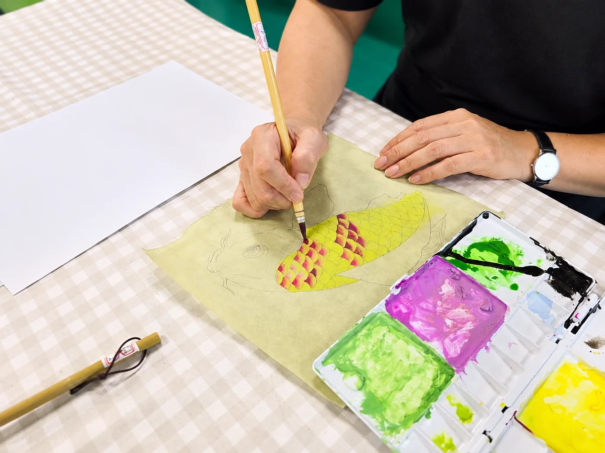
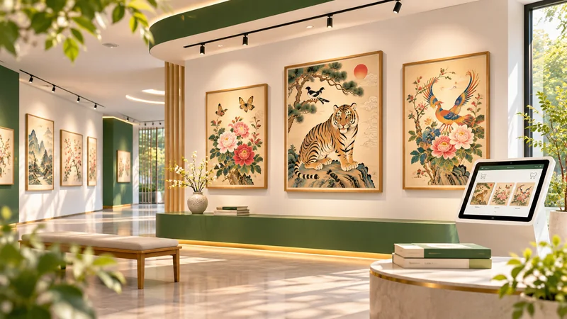
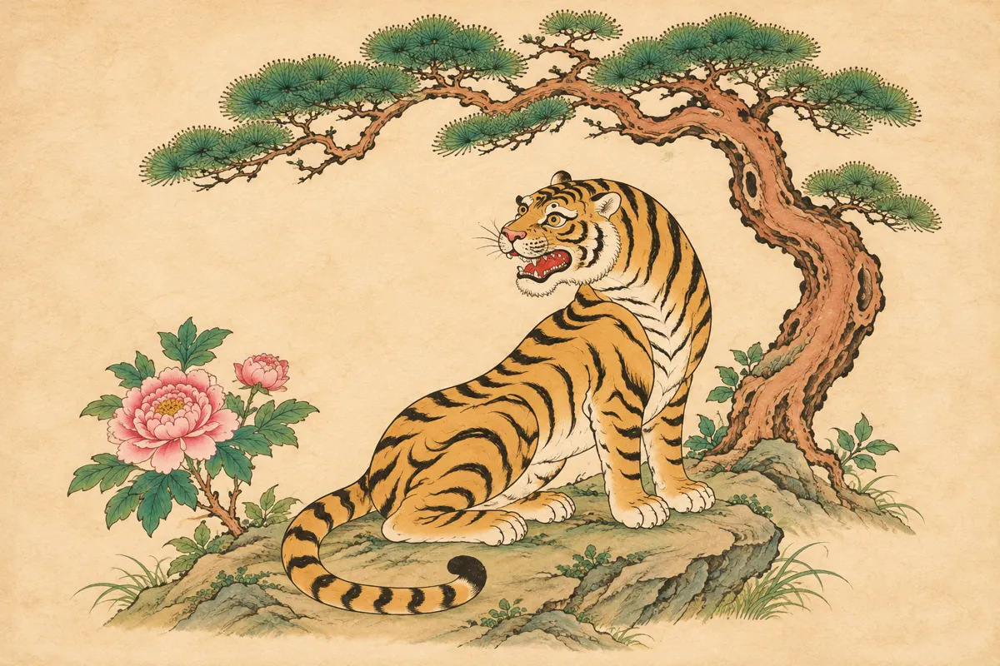
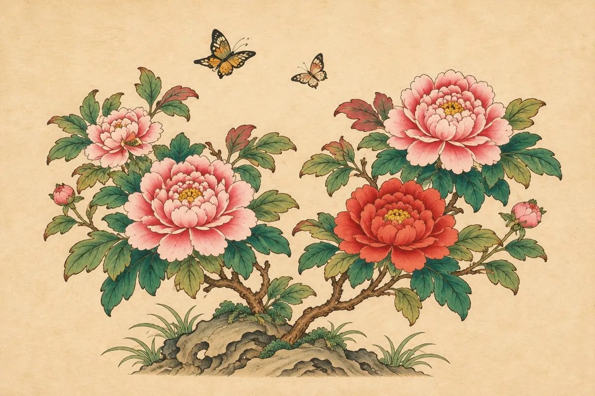
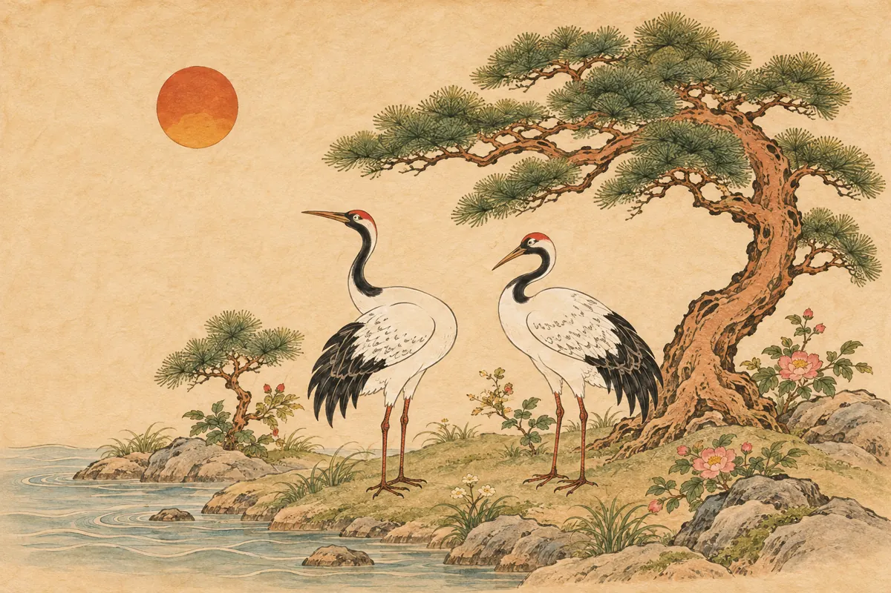
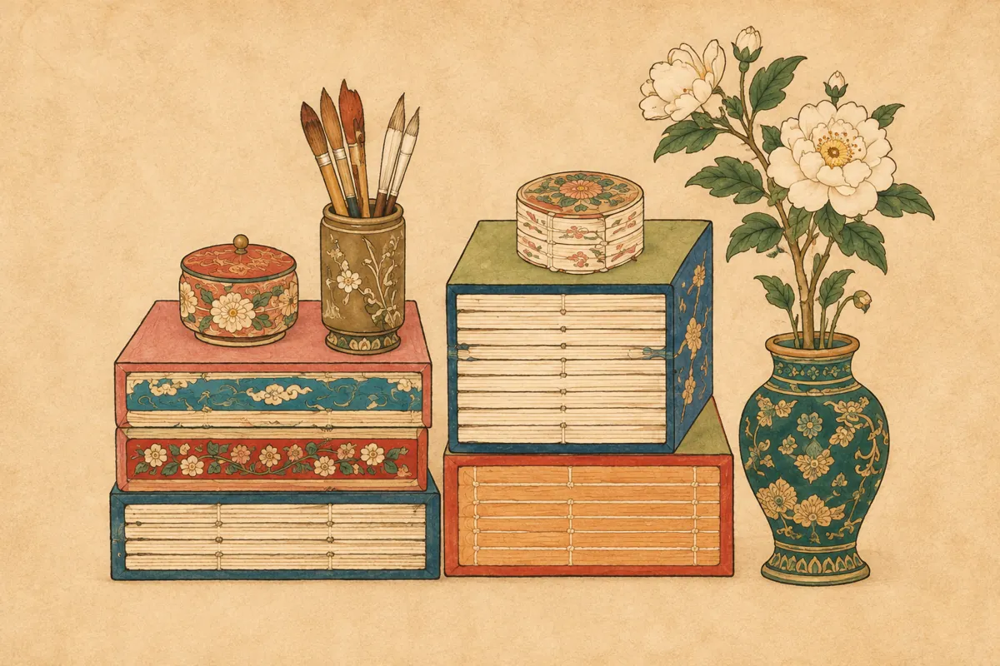
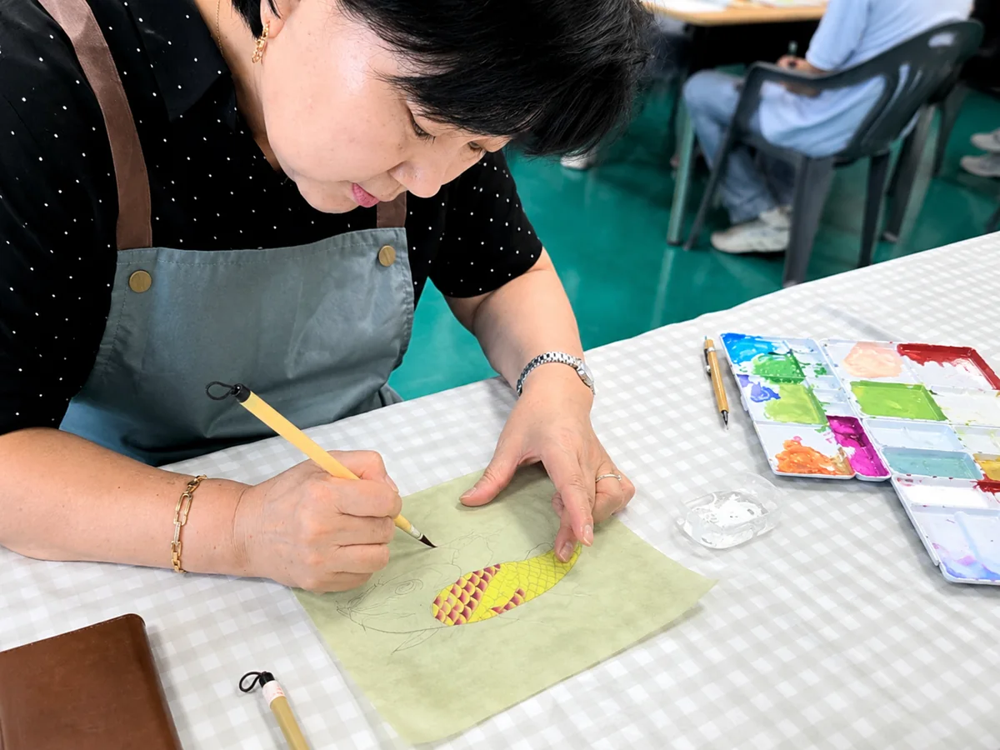
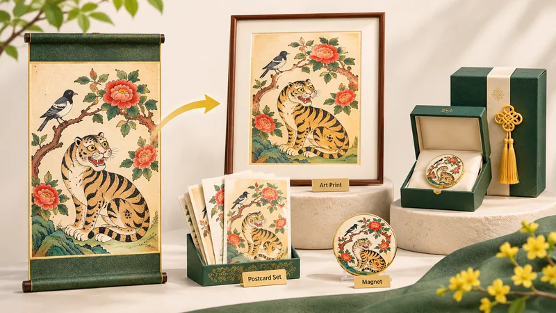
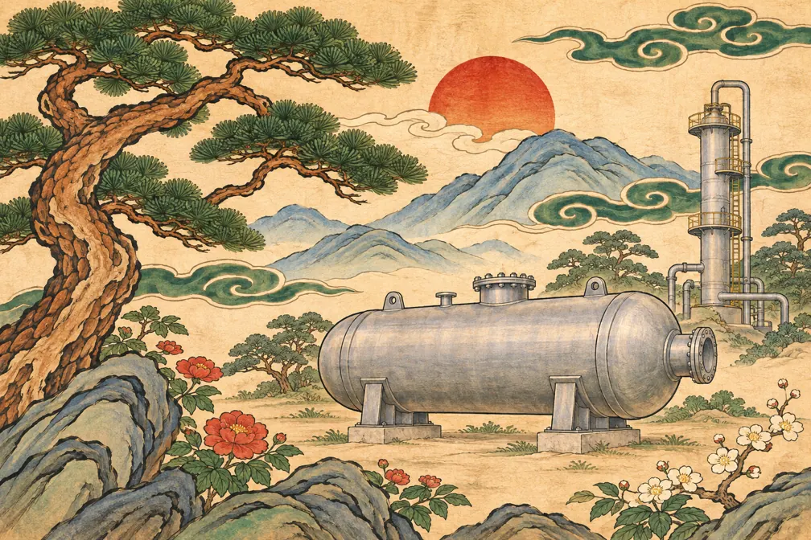

직원 민화 활동
작가의 정기 지도로 붓과 색에 익숙해지고, 각자의 속도에 맞춰 도안을 한 점씩 완성합니다.



굽은 소나무 아래 앉은 호랑이와 모란을 함께 담았습니다.
콘셉트 이미지
겹겹이 핀 모란 사이로 나비 두 마리가 날아듭니다.
콘셉트 이미지
붉은 해가 떠오른 물가에 학 두 마리가 서 있습니다.
콘셉트 이미지
책과 붓, 꽃병을 한자리에 놓은 책거리입니다.
콘셉트 이미지태장 아틀리에에서
함께 그리는 민화
미담 서정희 작가는 태장 직원의 민화 활동을 지도합니다. 붓을 쓰고 색을 채우는 기초부터 한 점의 작품을 완성하는 과정까지 함께합니다.

태장의 민화는 사람에게 맞는 일을 찾는 데서 시작했습니다. 저마다의 속도로 그림을 그리며, 재료 준비와 마감에도 각자의 역할로 참여합니다.
첫 화면의 잉어 그림도 작은 비늘을 한 칸씩 채우며 완성해 갑니다. 큰 그림을 작은 작업으로 나누고, 선과 색을 익히는 경험을 쌓습니다.
태장 민화의 시작 이야기그릴 부분을 살피고 도안과 붓, 사용할 색을 준비합니다.
선과 색의 경계를 익히며 각자의 속도로 도안을 채웁니다.
색과 세부를 살피고 필요한 부분을 다듬어 한 점을 마무리합니다.

태장 개소식에서는 밑그림이 있는 보석함을 채색한 경험이 있습니다. 그 경험을 바탕으로 민화를 일상에서 쓰고 선물하는 소품으로 이어가고자 합니다.
민화 인쇄 작품과 엽서를 구상하고 있습니다. 자석과 보석함에는 꽃과 동물 그림을 활용하려 합니다.
용도, 품목, 수량, 필요한 날짜를 알려주세요. 도안과 제작 일정, 견적을 확인해 드립니다.

작가의 정기 지도로 붓과 색에 익숙해지고, 각자의 속도에 맞춰 도안을 한 점씩 완성합니다.
민화를 처음 배우는 분을 위한 입문 수업입니다.
매주 수요일·금요일
오전반 ~
오후반 ~
회당 3시간
희망 요일과 시간대를 알려주시면 참여 가능 여부, 장소와 참가비를 안내해 드립니다.
초급반 신청 문의창원 지역 학교·기업·기관의 행사에 맞춰 민화 교육과 체험을 개별 상담합니다. 참여 인원과 연령대, 희망 장소와 시간을 알려주시면 가능한 구성을 함께 살펴봅니다.
기관·단체 출강 문의